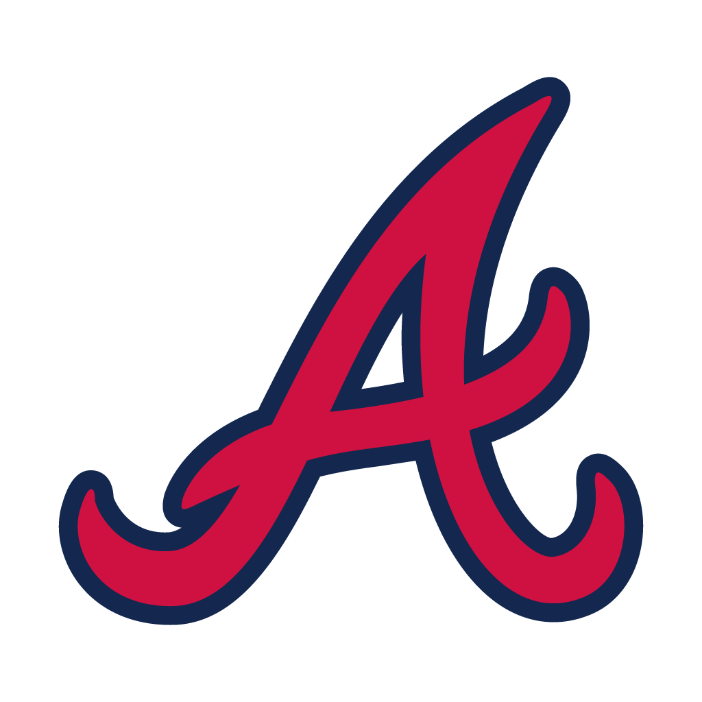
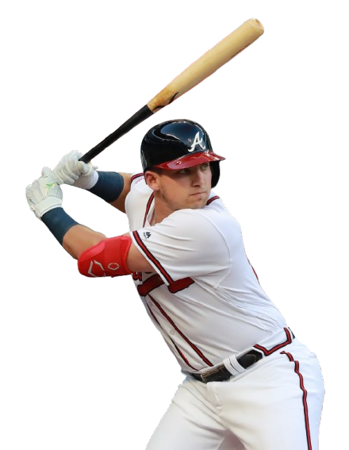
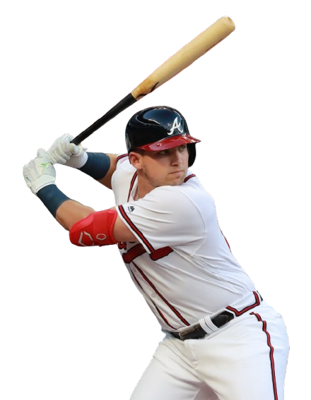
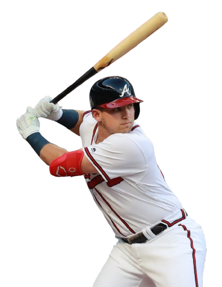
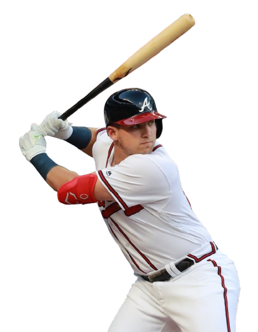

 


 

The Atlanta Braves are one of Major League Baseball's most iconic and storied franchises. With a legacy dating back to 1871, they hold the distinction of being the oldest continuously operating team in American professional sports. From legends like Hank Aaron to modern stars, the Braves represent excellence, grit, and the heart of Braves Country.
Learn About the Braves' History